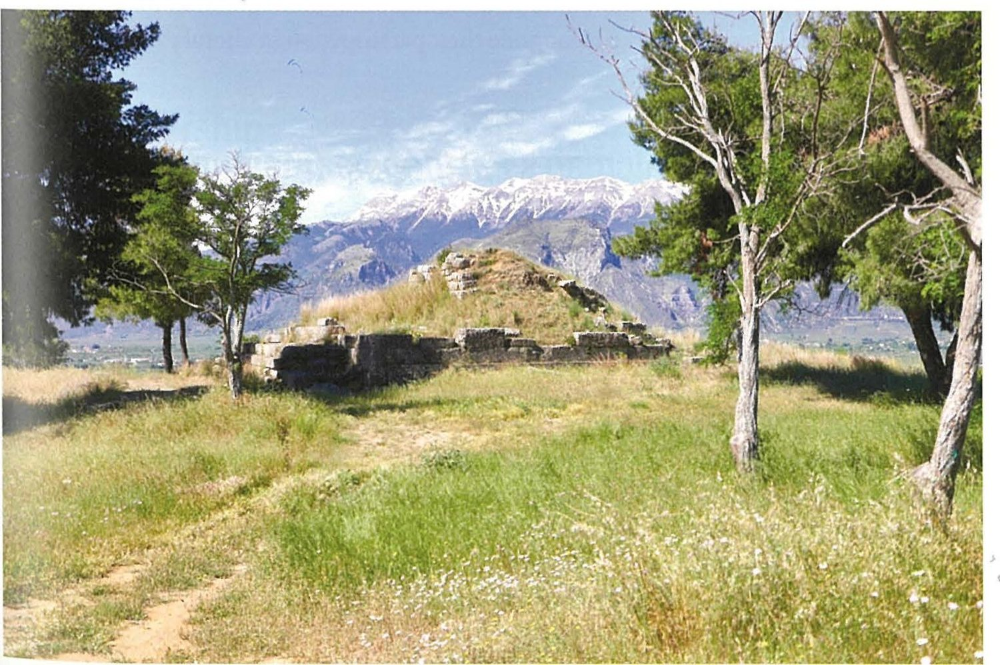

Spartan society to the Battle of Leuctra 371 BC · Lesson 25
Cultural and everyday life II: architecture
Three sanctuaries — the Menelaion, Artemis Orthia and the Amyklaion. What did Spartans build for their gods and heroes, and what does it reveal about their cultural and religious life?
Year 12 Ancient History · Section II, Option G · Present with → or space · Read on a phone with R

Spaced review · 6 minutes · from memory, no notes
Five questions
- 1Where did the ivory found at the Sanctuary of Artemis Orthia come from?Lesson 24
- 2What is Laconian black-figure pottery?Lesson 24
- 3What did Thucydides predict about the ruins of Sparta?Lesson 2
- 4When did Pausanias write, and how did he gather his information?A writer
- 5What is a sanctuary (temenos)?Today’s first term
- Imported from the east — there were no elephants in Greece. The ivories were found at Orthia; where each was carved is not certain.
- Pottery painted in Laconia with black figures on a pale (cream) slip, details scratched in — for example, the Arkesilas cup.
- That if Sparta were abandoned, “future generations would find it impossible to believe historians’ accounts of its present power” (Cooley G2).
- 2nd century AD; his Description of Greece was “based on his own visits” (Cooley) — he saw the buildings, but in Roman times.
- A sacred area set aside for a god or hero, with an altar and often a temple.
Learning intentions and success criteria · 2 minutes
Today’s goals
- evaluate what Spartan architecture reveals about cultural and religious life
- draw conclusions from evidence instead of narrating it
- describe the location, deity, date and key features of the Menelaion, Artemis Orthia and the Amyklaion
- explain the difference between what Pausanias describes and what excavation has found
- write a 7-mark answer on art and architecture in about 12 minutes
A sanctuary is the whole sacred area — altar, offerings and sometimes a temple; the temple is only the god’s house. And austere means plain and severe: today you will test whether “small” and “austere” mean the same thing.
Note-making · today’s routine
How to structure your notes
questions and key terms
short phrases, arrows (→ led to), abbreviations (Men. = Menelaion)
- 1Listen and look firstDon’t copy while the slide is being explained.
- 2Write your own notes at each ✎ checkpointPhrases, not sentences. Arrows for cause and effect.
- 3Compare with the model notesThey appear one row at a time. Add what you missed in a second colour.
- 4Copy each cue question into the left columnLater, cover your notes and answer the cue questions from memory.
- 5Finish with a three-sentence summaryFive checkpoints: Sparta’s sacred buildings · the Menelaion · Artemis Orthia · the Amyklaion · what the buildings reveal.
Key vocabulary
Words you will use today
| The buildings | Meaning |
|---|---|
| sanctuary · temenos | a sacred area for a god or hero, with an altar and often a temple |
| hero shrine | a sanctuary for a hero, often at a place linked to the hero’s life or tomb |
| akroterion (pl. akroteria) | an ornament on the peak or corners of a temple roof |
| Doric order | the plain style of temple building used across the Peloponnese |
| capital · abacus | the top of a column · the flat slab on top of the capital |
| triglyph | a block with three upright grooves in a Doric frieze |
| monumental | built on a grand scale to impress |
| The evidence | Meaning |
|---|---|
| excavation | the systematic digging and recording of a site |
| autopsy | seeing something with your own eyes — Pausanias’ method |
| votive | an offering given to a god or hero and left at a sanctuary |
| dedication | an object set up for a god or hero, often inscribed with the giver’s name |
| Mycenaean | the Late Bronze Age Greek world, roughly 1700–1100 BC |
| austere · exuberant | plain and severe · lively and richly decorated (NESA uses both words) |
Spelling: Cooley’s translations use Greek forms (Menelaos, Hyakinthos, Ortheia, Lakedaimonians). In your own writing use Menelaus, Hyacinthus, Orthia and Lacedaemonians. NESA’s marking guidelines spell the sanctuary of Apollo “Amyclaeon”; Cooley writes Amyklaion or Amyklai.
1 · Sparta’s sacred buildings · I do — map think-aloud
Sparta and its three great sanctuaries
- 1An open townNo walls until the Hellenistic period. On the low acropolis, the temple of Athena “Of the Bronze House” (Pausanias, Cooley K3).
- 2Artemis OrthiaBeside the Eurotas at Limnai, “just outside the town of Sparta” (Cooley).
- 3The MenelaionAt Therapne, on high ground south-east of the town, across the river.
- 4The AmyklaionApollo and Hyacinthus at Amyklai, about 5–6 km south, at the end of the processional road (the Aphetaïs).
- 5ThornaxPausanias reaches the city “As one moves away from Thornax” (Cooley K1). Its exact site is not known.
1 · Sparta’s sacred buildings · We do — an archaeologist on Spartan building
Modest buildings — but skilled work
8th–7th centuries BC
by the mid-7th century distinctive terracotta roof-decorations (disc akroteria [finials], antefixes, simas [gutters]) characterised Spartan temples. … the style was imitated widely in the Peloponnese. Even for their time, these are modest buildings – the temple of Orthia measured about 16 x 7 m … Already the Spartans avoid excessive monumentality at home, but the skill and grace of these artefacts serve to undermine the notion of a grim austerity.
6th–early 5th centuries BC
The Spartans were au fait with the latest developments in architecture, as witnessed by a few Doric capitals … a triglyph from the Menelaion, and the famous ‘Throne of Apollo’ at Amyklai; but evidence for large temples is hard to identify. The Spartans seem to have had a taste for unusual monuments, often finely worked in valuable materials, such as the ‘Bronze House’ of Athena Chalkioikos.
5th–4th centuries BC
All the same, monumentality was generally muted; though they were kept in repair and re-roofed every so often, evidence for large-scale stone reconstruction of temples is hard to identify.
W. G. Cavanagh (Professor Emeritus of Aegean Archaeology, Nottingham), ‘Introduction to Lakonian Archaeology’, in M. G. L. Cooley (ed.), Sparta (2023) · a modern summary of the excavated evidence
What was modest about Spartan temples?
Their size: the temple of Orthia was about 16 × 7 m, roughly one-eighth of Hera’s temple at Olympia, and large temples are “hard to identify”.
What was skilled or up to date?
The terracotta roof-decorations, copied across the Peloponnese; Doric capitals and a triglyph; the throne of Apollo at Amyklai; and unusual monuments such as Athena’s Bronze House.
Small, yes — but in the same passage Cavanagh says that the “skill and grace of these artefacts serve to undermine the notion of a grim austerity”. Keep small and austere apart.
Notes checkpoint 1 of 5
Sparta’s sacred buildings
Write your own notes first. Then compare, row by row, and add what you missed in a second colour.
2 · The Menelaion · I do — reading a site
Reading a site: the Menelaion at Therapne

… south-east of Sparta, above the River Eurotas is the Menelaion or shrine of Menelaus, husband of Helen. Mycenean remains of 15th–13th centuries have been found here alongside a shrine from c. 700 BC, and the obvious guess is that the shrine was established at the site where Menelaus and Helen were thought to have lived at the time of the Trojan War …
M. G. L. Cooley (ed.), Sparta (2023), introduction to C29–C31
Therapne, on high ground across the Eurotas, south-east of the town.
Two phases: Mycenaean remains (15th–13th centuries BC), then a shrine from c. 700 BC.
Menelaus, king of Sparta in the Trojan War legend, and Helen: a hero shrine.
A stepped stone platform probably carried the shrine (the unit textbook); Catling’s excavations (1973–76) found inscriptions naming the couple (Cooley).
2 · The Menelaion · I do — the site in phases
The Menelaion through time
2 · The Menelaion · We do — what the inscriptions confirm
Who was worshipped here — and how do we know?
Deinis dedicated these to [Helen, wife of] Menelaos.
Inscribed bronze aryballos (small flask), mid- to late 7th century BC · Cooley C29
To Helen
Bronze harpax (claw-like object), c. 570 BC · Cooley C30
Euthykrenes dedicated this to Menelaos.
Small limestone stele, early 5th century BC; it probably held a large bronze statuette, now lost · Cooley C31
a small inscribed Doric capital and abacus that she dedicated to Helen at the sanctuary of the Menelaion
S. Hodkinson, ‘Introduction to the Epigraphy of Lakonia and Messenia’, in Cooley (ed.), Sparta (2023), on Cynisca, the king’s daughter who won at Olympia in 396 or 392 BC
What evidence confirms who was worshipped here?
Inscriptions naming both: “To Helen” on the harpax, Menelaus on Euthykrenes’ stele, and Cynisca’s capital to Helen. On the flask, Helen’s name is in square brackets: restored by modern editors, so it is not proof on its own.
What does Pausanias add?
Very little: in the 2nd century AD he mentions only a temple at Therapne where Menelaus and Helen were said to be buried (3.19.9, paraphrased in the unit textbook). Excavation found the offerings.
The Menelaion reveals a city that tied its identity to the heroic past: from about 700 BC Spartans honoured Menelaus and Helen, probably where they believed the couple had lived, and inscribed offerings to each of them show the cult still alive in the classical period.
Notes checkpoint 2 of 5
The Menelaion
3 · Artemis Orthia · We do — from the finds to the building
Orthia: a small temple, a rich sanctuary

Thousands of lead figurines, carved ivories, and boys’ contests: Arexippos’ prize sickles (4th century BC) and, much later, the Roman whipping.
By the Eurotas at Limnai, “just outside the town of Sparta” (Cooley); pottery from c. 900 BC. Excavated early in the 20th century (published by Dawkins, 1929): an altar, and a temple rebuilt more than once.
About 16 × 7 m, roughly one-eighth of Hera’s at Olympia — but roofed with terracotta decorations in a style “imitated widely in the Peloponnese” (Cavanagh).
Clay masks were dedicated here “by players of a series of stock characters” (Cavanagh).
Semicircular seating of a Roman theatre, 3rd century AD: the whipping described by Cicero (C92) and Pausanias (C93) seems to have drawn enough spectators to need it (Cooley).
A modest building at the centre of a crowded religious life — contests, performances, thousands of offerings. Spartans invested in worship, not in the size of the house.
Notes checkpoint 3 of 5
Artemis Orthia
4 · The Amyklaion · Source 13.3, part 1 — the site
The Amyklaion: Apollo’s great sanctuary

Provenance: sanctuary of Apollo and Hyacinthus, Amyklai, about 5–6 km south of Sparta · pottery from about 900 BC · throne built in the late 6th century BC · known from scattered blocks and offerings found in excavations (the unit textbook), and from Pausanias, Description of Greece 3.18.9–3.19.5 (2nd century AD).
Pottery of about 900 BC “has been found at sanctuaries which were to be the focus of Sparta’s calendar of festivals: of Apollo and Hyakinthos at Amyklai” (Cavanagh). A bronze handle of the late 7th–early 6th century reads: “Dorkonidas/Dorkoilidas dedicated (this) to Apelo.” (Cooley C1)
“The people of Amyklai always return for the Hyakinthia for the hymn to Apollo” (Xenophon, Hellenika 4.5.11, Cooley C70).
In 421 BC Sparta and Athens agreed to set up a stele, “the one at Lakedaimon next to the statue of Apollo at Amyklai” (Thucydides 5.23, Cooley B18).
Excavation has recovered only scattered blocks (the unit textbook), with “masons’ names scratched on architectural blocks from the late-sixth-century throne of Apollo” (Hodkinson).
4 · The Amyklaion · Source 13.3, part 2 — a description · We do — OVPRL
Pausanias describes the throne of Apollo
The throne was made by Bathycles of Magnesia, a Greek artist probably from Asia Minor, and carved with scenes from myth. In the middle stood an ancient bronze Apollo, about 30 cubits (roughly 13 metres) tall by his guess, which apart from its face, hands and feet looked like a bronze pillar. It stood on what was said to be the tomb of Hyacinthus.
Pausanias, Description of Greece 3.18.9–3.19.5 · 2nd century AD · paraphrased in the unit textbook, as it is not in Cooley
Cooley on Pausanias: his work was “based on his own visits”, and he “was particularly interested in ancient monuments, cults and traditions, and offers many useful details on these, often confirmed by archaeology”.
| OVPRL | Question | Model note |
|---|---|---|
| O | Pausanias saw the throne some 650–700 years after it was built. What might have changed? | Repairs, losses, rebuilding: in the agora he admits the Persian Stoa had been “altered” (Cooley K2) |
| V | What does he reveal that the stones could not? | The maker, the carved myths, the colossal Apollo, the tomb of Hyacinthus |
| P | Why would a travel guide describe the decoration in detail? | Pausanias himself was ‘particularly interested in ancient monuments, cults and traditions’ (Cooley), and he wrote a guide based on his own visits |
| R | How do the masons’ names support him, and where do we rely on him alone? | They confirm a late-6th-century throne really stood here; its look, maker and size rest on him (the height is a guess) |
| L | How did 5th-century Spartans use the sanctuary? Can either source tell us? | Not directly. For use, turn to the Hyakinthia (Xenophon, C70) and the treaty stele (B18) |
Check for understanding · hinge question · hold up 1–4 fingers
Who made the throne of Apollo at Amyklai, according to Pausanias?
- 1Gitiadas, a local Spartan architect
- 2Bathycles of Magnesia, an artist from outside Laconia
- 3Lycurgus, the lawgiver
- 4H. W. Catling, the excavator of the Menelaion
2 — Bathycles. Why it matters: Sparta’s most famous monument was made by an outsider, probably from Asia Minor — which suggests a city open to foreign skill. Gitiadas, “a local architect”, oversaw Athena’s Bronze House (Pausanias, Cooley K3): Sparta had its own masters too.
Notes checkpoint 4 of 5
The Amyklaion
5 · What the buildings reveal · We do · 10 minutes · fill in the grid
The three-site grid
Type in the boxes (on a laptop or phone), or copy the grid into your notes. Every row needs evidence.
| Artemis Orthia | Menelaion | Amyklaion | |
|---|---|---|---|
| Location | |||
| Deity or hero | |||
| Date | |||
| Key features | |||
| Evidence: excavation or Pausanias? | |||
| What it reveals |
Your typing stays in this browser on this device.
5 · What the buildings reveal · check — the completed grid
The three-site grid, completed
| Artemis Orthia | Menelaion | Amyklaion | |
|---|---|---|---|
| Location | Beside the Eurotas at Limnai, just outside the town | Therapne, on high ground across the Eurotas, south-east of the town | Amyklai, about 5–6 km south, at the end of the processional road |
| Deity or hero | Artemis Orthia | Menelaus and Helen (hero cult) | Apollo and Hyacinthus |
| Date | Pottery from c. 900 BC; Archaic temple; Roman seating, 3rd c. AD | Mycenaean remains, 15th–13th c. BC; shrine c. 700 BC | Pottery from c. 900 BC; throne, late 6th c. BC |
| Key features | Altar; small temple (c. 16 × 7 m) with terracotta roof-decorations; masks, figurines, ivories | Stepped stone platform that probably carried the shrine (the unit textbook); a triglyph; inscribed offerings | The throne of Apollo, carved with myths; a colossal bronze Apollo on Hyacinthus’ supposed tomb |
| Evidence: excavation or Pausanias? | Mainly excavation (British School at Athens; Dawkins 1929); Pausanias describes Roman-era ritual, the whipping | Excavation (Catling, 1973–76): offerings name the couple; Pausanias mentions only a temple | Both: blocks with masons’ names, offerings (C1); the throne’s look from Pausanias alone |
| What it reveals | A modest building in a busy sanctuary: worship, contests and performance; wealth spent on offerings, not size | Identity tied to the heroic past; a cult kept up for centuries | Sparta’s showpiece: up-to-date building by an outside master, according to Pausanias, for Apollo, god of the Hyakinthia |
5 · What the buildings reveal · I do — two kinds of evidence If time
Pausanias v. excavation
| Site | Pausanias (2nd century AD) tells us … | Excavation tells us … |
|---|---|---|
| Orthia | the Roman-era whipping at the altar (3.16.10–11, Cooley C93) | the Archaic sanctuary (a small temple, thousands of offerings) and later victors’ inscriptions, most of them Hellenistic or Roman |
| Menelaion | only a temple where Menelaus and Helen were said to be buried (3.19.9) | Mycenaean remains, the shrine of c. 700 BC, offerings naming the couple |
| Amyklaion | the throne’s maker, its carved myths and its colossal bronze Apollo (3.18.9–3.19.5) | scattered blocks with masons’ names; early offerings such as a bronze handle (C1) |
Pausanias tells us what stood in his own time; excavation gives dates, materials and offerings. Cooley: Book III offers “a detailed insight into perceptions of Sparta in the Roman period”. But excavated dates are rough too: they “can seldom be refined even as closely as to a generation or two” (Cavanagh).
5 · What the buildings reveal · Revisit Thucydides · 8 minutes · in pairs
Was Thucydides right — or right about the wrong kind of power?
[10.2] For example, if the city of the Lakedaimonians were to be destroyed and abandoned, and all that was left were its temples and the foundations of its buildings, I suspect that future generations would find it impossible to believe historians’ accounts of its present power. … Yet to the uninformed observer its physical remains would seem to fall far short of the reality, because it lacks the conventional layout of a modern city, has no temples or extravagant public buildings, and is simply a collection of villages typical of ancient Greek society.
Thucydides, History of the Peloponnesian War 1.10.2 · an Athenian, writing in the late 5th century BC · trans. B. Wilson · Cooley G2
Thucydides was right about scale: Sparta had no walls and only small temples. But he was right about the wrong kind of power, because the sanctuaries show a city that spent its wealth on gods, festivals and offerings and tied itself to the heroic past.
Did Sparta really have “no temples”?
No: two sentences earlier he imagines “its temples” surviving. Read it as no extravagant temples or public buildings — and the 16 × 7 m temple of Orthia fits.
No walls until the Hellenistic period; small temples; large temples “hard to identify” (Cavanagh).
The sanctuaries show wealth spent on gods, festivals and offerings, up-to-date building at Amyklai, and claims to the heroic past at the Menelaion. Cavanagh: Thucydides’ “collection of villages” is “an overstatement”.
Notes checkpoint 5 of 5
What the buildings reveal
Finish your notes
Summary: three sentences
- Where were the three sanctuaries, and whom did each honour?
- What was Spartan religious building like?
- What does it reveal — and how do we know?
Sparta’s three great sanctuaries were Artemis Orthia beside the Eurotas at Limnai, the Menelaion at Therapne across the river, where Menelaus and Helen were honoured as heroes, and the Amyklaion of Apollo and Hyacinthus about 5–6 km south. Their temples were small even for their time, but finely made and up to date, from terracotta roof-decorations copied across the Peloponnese to the late-6th-century throne of Apollo, which Pausanias credits to Bathycles of Magnesia. Excavation and Pausanias together show a city that spent its wealth on gods, festivals and the heroic past rather than on grand buildings, although Pausanias saw these sites only in Roman times.
HSC 2022 · Section II · Question 11 (c) · 7 marks
What do art and architecture reveal about cultural and everyday life in Sparta in this period?
Lesson 24 took this question apart and wrote the art half. Today: the architecture half — then the whole answer.
HSC 2022 Q11(c) · recap from Lesson 24 · the criteria and the feedback
What the question asks — and what the markers rewarded
Not a glossary key word. The criteria reward an “explanation”: name the building, then say what it shows and why.
Both halves. Architecture: the Amyklaion, the Menelaion and the Sanctuary of Artemis Orthia — the syllabus list.
About 12–13 minutes · a judgement first · each object or building followed by what it reveals.
| Marks | Criteria (2022, part (c)) — top two bands |
|---|---|
| 6–7 | Presents a well-developed and detailed explanation relevant to the question · Communicates ideas and information coherently, using appropriate historical terms and concepts |
| 4–5 | Presents an explanation relevant to the question · Communicates ideas and information clearly, using appropriate historical terms and concepts |
In better responses, students were able to use examples of specific art and architecture to draw revelations about cultural and everyday life (c)Areas for students to improve include avoiding a narrative response on cultural and everyday life, instead focusing on what art and architecture reveal about it (c)
HSC 2022 Q11(c) · We do — NESA’s “answers could include”, the architecture point
NESA’s architecture point — checked against Cooley
Answers could include, Option G: NESA 2022 HSC Ancient History Marking Guidelines, Section II part (c) · NESA’s spelling “Amyclaeon”
Cooley says
Even sharper: NESA names only the Amyklaion. Add the Menelaion (the heroic past) and Orthia (a small temple in a rich sanctuary).
HSC 2022 Q11(c) · We do — one answer, two paragraphs
A plan for the whole answer
| Move | What to write | Evidence | → What it reveals |
|---|---|---|---|
| 1 · JudgementLesson 24, sentence 1 | Art and architecture reveal a Sparta more skilled, outward-looking and devoted to the gods than the austere stereotype suggests — but its display went mostly into sanctuaries, not grand public buildings. | ||
| 2 · ArtLesson 24’s paragraph | Orthia ivories · the bronze girl · black-figure vases · lead figurines · the later Archaic “apparent decline” | Cooley Fig. 1 · D64 · the Arkesilas cup · Cavanagh | costly piety, contacts abroad, active girls, festival-goers — then change |
| 3 · Architecturetoday’s paragraph | small temples, fine roof-decorations · the throne at Amyklai · the Menelaion | Cavanagh · Pausanias (with his date) · Cooley on the Menelaion | display in sanctuaries; up-to-date, outside skill; identity rooted in the heroic past |
| 4 · Close | “Overall …” — return to the judgement and refine it: small in scale, not in skill. | ||
About 12–13 minutes: 1 judgement · 5 art · 5 architecture · 1 close.
About 300–400 words (our estimate). Short of time? Four art objects and two sanctuaries are enough.
Every object and building gets a “reveals …” or “suggests …” clause.
HSC 2022 Q11(c) · You do · 12 minutes · press K for the timer
What do art and architecture reveal about cultural and everyday life in Sparta in this period? (7 marks)
- a judgement in your first sentence, covering art and architecture
- your art paragraph from Lesson 24, tightened
- an architecture paragraph: at least two of the three sanctuaries, named and dated
- after each building, what it reveals
- one limit of the evidence: Pausanias’ date, or the scattered blocks
- close with “Overall …”
Start the architecture paragraph: “Architecture shows where that display mostly went: …”
Then: “The temple of Artemis Orthia measured only …, yet …”
Then: “At Amyklai, the late-6th-century throne of Apollo …, which reveals …”
HSC 2022 Q11(c) · annotated model, written for this lesson · paragraph 2 of 2: architecture
Architecture: building → what it reveals → close the loop
Model written for this lesson · ≈ 160 words · follows Lesson 24’s art paragraph: the whole answer ≈ 390 words
Marker’s margin
HSC 2022 Q11(c) · Self-mark
Mark your own answer
Fewer than six ticks? Add the missing move in a second colour.
Highlight every “reveals” or “suggests” clause. Any building without one has been described, not explained — the “narrative response” the markers asked students to avoid.
Outline the key features of ONE Spartan sanctuary. (4 marks)
What does the Menelaion reveal about Spartan religious life in this period? (5 marks)
Practice and review · 1 of 6 · sequencing · written for this lesson
Put these in order, earliest first
Write the letters in order and a date beside each.
- APausanias describes the throne of Apollo at Amyklai
- BThe throne of Apollo is built at Amyklai
- CA shrine is set up at the Menelaion, beside Mycenaean remains
- DThe earliest pottery found at the sanctuaries of Apollo at Amyklai and of Orthia
- ESparta and Athens agree to set up a treaty stele next to Apollo’s statue at Amyklai
- FEuthykrenes dedicates a stele to Menelaus
- GSemicircular theatre seating is built at Orthia, probably for spectators of the whipping
- HArexippos sets up his prize sickles at Orthia
D (c. 900 BC) → C (c. 700 BC) → B (late 6th century BC) → F (early 5th century BC) → E (421 BC) → H (4th century BC) → A (2nd century AD) → G (3rd century AD)
Practice and review · 2 of 6 · true, false, justify
True or false? Justify with evidence
- 1The Menelaion stands at Therapne, south-east of Sparta, on high ground east of the Eurotas. True — Cooley: “south-east of Sparta, above the River Eurotas”; Therapne lies across the river, on its east bank.
- 2Pausanias says a Spartan craftsman made the throne of Apollo. False — he names Bathycles of Magnesia, an outsider. Gitiadas, “a local architect”, oversaw Athena’s Bronze House (K3).
- 3The temple of Artemis Orthia was one of the largest temples in the Peloponnese. False — about 16 × 7 m, roughly one-eighth of Hera’s temple at Olympia (Cavanagh).
- 4Inscribed offerings from the Menelaion name both Helen and Menelaus. True — “To Helen” (C30); Euthykrenes’ stele “to Menelaos” (C31). On C29, Helen’s name is restored.
- 5The theatre seating at Orthia was built in the classical period. False — it belongs to the 3rd-century AD Roman theatre (Cooley).
- 6Excavation has recovered the throne of Apollo almost complete. False — only scattered blocks (the unit textbook), some with masons’ names; its appearance comes from Pausanias.
- 7The style of Spartan temples’ terracotta roof-decorations was copied elsewhere in the Peloponnese. True — “the style was imitated widely in the Peloponnese” (Cavanagh).
- 8Pausanias’ book on Sparta mainly describes the city of the classical period. False — Cooley: it offers “a detailed insight into perceptions of Sparta in the Roman period”.
Practice and review · 3 of 6 · cloze
Fill the gaps
- The temple of Artemis Orthia stood beside the River Eurotas.
- At the Menelaion the Spartans honoured Menelaus and his wife Helen.
- Pausanias says the throne of Apollo was made by an artist called Bathycles.
- The Amyklaion was the home of a three-day festival called the Hyakinthia.
- The shrine at the Menelaion was set up beside Mycenaean remains of the 15th–13th centuries BC.
- Spartan temples were decorated with terracotta roof ornaments, including disc akroteria.
- Masons scratched their names on the blocks of the late-6th-century throne of Apollo.
- Thucydides imagined that only Sparta’s temples and the foundations of its buildings would be left.
Practice and review · 4 of 6 · write an analytical paragraph
How useful is Pausanias as evidence for the throne of Apollo at Amyklai?
Pausanias is very useful for what the throne of Apollo looked like, but much less useful for what it meant to classical Spartans. Writing in the 2nd century AD from his own visits, he names its maker, Bathycles of Magnesia, and describes the myths carved on it and the ancient bronze Apollo, about 30 cubits high by his guess, that stood on the supposed tomb of Hyacinthus. The scattered blocks recovered by excavation could never tell us this, so without him we would hardly know the throne’s appearance. Yet he saw it some 650–700 years after it was built, and Cooley warns that little of his account of Sparta ‘can be firmly linked to the classical period’; the excavated blocks, some with masons’ names, confirm that a throne was built in the late 6th century. Pausanias therefore shows us the monument as it stood in Roman times, which we can use for the classical city only where excavation agrees with him.
Practice and review · 5 of 6 · extended response · HSC-style, written for this lesson
To what extent does the architecture of Sparta’s sanctuaries support the image of an austere society? (15 marks)
Support your response with evidence from relevant sources. Plan it in four moves:
- Thesis in your first sentence — for example, austere in scale, but not in skill or devotion.
- For the image: no walls until the Hellenistic period; small temples (Orthia about 16 × 7 m); large temples “hard to identify”; Thucydides 1.10.2 (Cooley G2).
- Against it: roof-decorations copied across the Peloponnese; the triglyph and Cynisca’s Doric dedication at the Menelaion; the throne at Amyklai; the Bronze House; the rich offerings; Cavanagh’s “overstatement”.
- The evidence itself: Pausanias saw Roman-era Sparta; excavated dates are rough; much of the town lies under Roman and modern building. Then your refined judgement.
Lesson 24’s art and today’s architecture together make this question’s evidence; the 7-mark model in section 6 is its core.
Practice and review · 6 of 6 · chapter review (1) · the Quick Check
Review: architecture at three sanctuaries
- Give the location, deity and one key feature of each sanctuary. Orthia: by the Eurotas at Limnai; Artemis Orthia; a small temple (c. 16 × 7 m). The Menelaion: Therapne, south-east of Sparta across the Eurotas; Menelaus and Helen; a stepped stone platform that probably carried the shrine (the unit textbook). The Amyklaion: Amyklai, about 5–6 km south; Apollo and Hyacinthus; the late-6th-century throne of Apollo.
- What evidence confirms who was worshipped at the Menelaion? Inscribed offerings: a bronze harpax “To Helen” (C30), Euthykrenes’ stele to Menelaus (C31) and Cynisca’s Doric capital to Helen. On the bronze flask (C29) Helen’s name is restored by editors.
- Who made the throne of Apollo, according to Pausanias, and why is that significant? Bathycles of Magnesia, probably from Asia Minor: Sparta’s most famous monument was the work of an outsider, which suggests a city open to foreign skill and up to date in architecture.
- Was Thucydides right about Spartan architecture? Give one point for and one against. For: there were no walls and only small temples, so the remains would understate Sparta’s power. Against: he imagines “its temples” surviving, the temples were finely decorated, and Cavanagh calls his “collection of villages” an overstatement.
Practice and review · 6 of 6 · chapter review (2) · written for this lesson
Review: architecture at three sanctuaries
- Why does Cavanagh think Spartan temple building undermines the idea of a grim austerity? Small temples, finely made: the roof-decorations were “imitated widely in the Peloponnese”, and the “skill and grace of these artefacts serve to undermine the notion of a grim austerity”.
- Compare what Pausanias and excavation each tell us about the three sanctuaries. Pausanias describes what stood in the 2nd century AD: the Roman whipping at Orthia, a temple at Therapne, the throne’s maker and decoration. Excavation gives dates, materials and offerings, such as the Menelaion inscriptions and the masons’ names at Amyklai.
- What do the three sanctuaries reveal about Spartan cultural and religious life? Wealth went into gods, festivals and offerings, not large buildings; identity was tied to the heroic past; and the best building was up to date — at Amyklai, according to Pausanias, by an outside master.
Exit ticket · before you leave
Two sentences
One conclusion about Spartan society that architecture supports is … because …
One limit of the evidence for it.
Next lesson: Sparta’s own voices — Tyrtaeus and Alcman — and how Spartans spent their leisure.
Sources and credits
Where everything comes from
Quoted from the translations in M. G. L. Cooley (ed.), Sparta, LACTOR Sourcebooks in Ancient History 21, 2nd edn (Cambridge University Press, 2023): Thucydides 1.10.2 and 5.23 (G2, B18, trans. B. Wilson); Xenophon, Hellenika 4.5.11 (C70); Pausanias 3.11.1, 3.11.3 and 3.17.1–3 (K1, K2, K3), and 3.16.10–11 (C93, referred to); Cicero, Tusculan Disputations 2.34 (C92, referred to); inscriptions C1, C29, C30 and C31. Pausanias 3.18.9–3.19.5 and 3.19.9 are not in Cooley: paraphrased from the unit textbook. Cooley’s introductions (literary sources; the Menelaion; Artemis; Artemis Orthia; section K), W. G. Cavanagh, ‘Introduction to Lakonian Archaeology’, and S. Hodkinson, ‘Introduction to the Epigraphy of Lakonia and Messenia’ (on the masons’ names and Cynisca’s dedication, IG 5.1.235), in Cooley (ed.).
Modern: R. M. Dawkins, The Sanctuary of Artemis Orthia at Sparta (London, 1929); H. W. Catling, ‘Excavations at the Menelaion, Sparta, 1973–1976’, Archaeological Reports 23 (1976–1977), 24–42.
HSC question, marking criteria, “answers could include” and marking feedback: NSW Education Standards Authority, 2022 HSC Ancient History examination, marking guidelines and feedback. © NESA.
- The Menelaion at Therapne: the remains of the stepped stone platform on its ridge above the Eurotas, with the snow-capped Taygetus range across the valley — Clarke & Garner, Fig 5.7
- The Menelaion at Therapne, with Mt Taygetus behind — Clarke & Garner, Fig 8.7
- Remains of the Sanctuary of Artemis Orthia beside the Eurotas — Clarke & Garner, Fig 8.8
- The site of the sanctuary of Apollo at Amyklai — Clarke & Garner, Fig 7.7
Books: Clarke & Garner, Spartan society textbook (school copy).
Textbook images are reproduced for teaching, with the source given under each one. The map of Sparta and its sanctuaries (after Bradley, Fig 3.7) and the Menelaion timeline were drawn for this lesson.